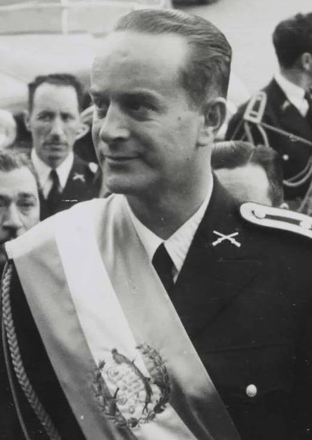

A42-POL-018 // HISTORICAL CLAIM REVIEW
Guatemala's 1954 Coup and Operation PBSUCCESS
Assessment: The coup was a foreign-backed intervention with high-confidence CIA involvement and crucial domestic military defections.

.jpg){kind=link}
The precise allegation
Guatemalan president Jacobo Árbenz was forced from office in June 1954 after a CIA-backed covert operation supported a small exile force and military pressure. Declassified records confirm US planning, propaganda, and arms. The popular theory that the coup was simply a United Fruit Company operation overstates a corporate role, though company interests and US anti-communism both mattered.
Chronology and political context
Árbenz's land reform expropriated uncultivated land, including United Fruit holdings, intensifying conflict with the company and Washington. The CIA trained Carlos Castillo Armas's force in neighboring states, conducted psychological operations, and supported diplomatic isolation. When Guatemala's army refused to fight, Árbenz resigned on June 27; a sequence of military governments followed.
Primary historical record
CIA operational records, State Department files, and the 1954 diplomatic correspondence document the covert campaign. Company records and the 1954 agrarian law illuminate the land dispute. US records reveal official reasoning but reflect the administration's anti-communist framing; Guatemalan archives are incomplete and the coup's armed scale was small.
Corroboration and contrary evidence
Independent historians agree the CIA operation and US diplomatic pressure were decisive. Piero Gleijeses's archival work challenges simplistic accounts by showing limited local force and decisive Guatemalan army decisions. United Fruit lobbied Washington, but evidence does not reduce the operation to corporate command; the government's fears of communist influence were also central.
What remains uncertain
The relative weight of corporate lobbying, ideology, and strategic concerns remains debated. The precise counterfactual—whether Árbenz would have fallen without the CIA—is uncertain. The subsequent civil war and mass violence had multiple causes; they should not be described as an immediate, fully planned outcome of the 1954 operation.
Calibrated verdict
The coup was a foreign-backed intervention with high-confidence CIA involvement and crucial domestic military defections. United Fruit's influence is documented but does not alone explain policy. The allegation that the company literally directed a private overthrow is unsupported; the strongest account joins corporate advocacy with broader US Cold War calculations.
What evidence could change this assessment
Complete Guatemalan military and cabinet files, full CIA operational records, and company-government communications could further distinguish motive and command. Evidence that the Guatemalan army planned the removal independently would adjust the foreign-causation assessment, while authenticated operational tasking would clarify US control over specific decisions.
Sources and source limits
- CIA — PBSUCCESS documentsDeclassified operational files document planning; collection is incomplete and produced by the agency that ran the operation.
- U.S. Department of State — FRUS: Guatemala, 1952–1954Primary diplomatic records document policy and covert context; official US perspective and redactions limit completeness.
- Piero Gleijeses, Shattered Hope (Princeton University Press)Scholarly archival reconstruction of Árbenz's government and coup; interpretation is influential and centered on Guatemalan/US records.